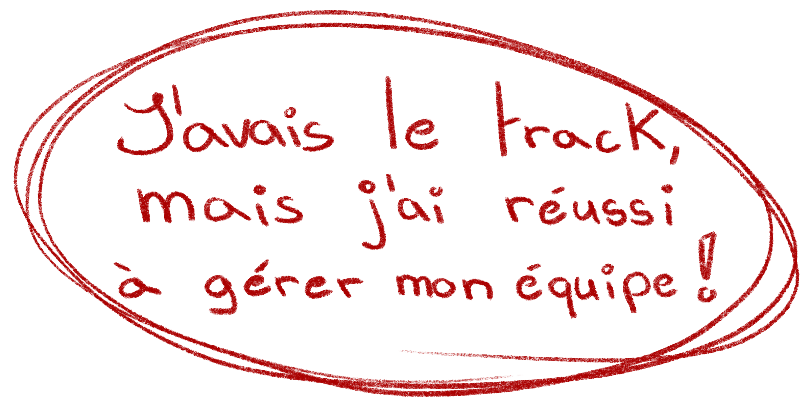

Avant-Après
22/09/2024
Vidéo
Le but ? Imaginer un scénario ou on doit mettre en scène une conséquence mais sans jamais la montré, seulement le avant de l’événement et son après, ni plus ni moins.
Infos pratiques

A disposition, la donnée qu’on à reçu et le scénario que j’ai réussi à créer pour ce projet.
Ce projet s’est fait réaliser durant ma 3ème année de ma formation avec comme logiciel de montage, DaVinci.
Pourquoi ?
Pour réaliser ce projet qui a comme challenge de montrer un avant et un après d’un événement sans montrer celui-ci, j’ai choisi comme thème le sport notamment la moto-cross.
C’est un sport connu mais non pas pour sa dangerosité, alors qu’il peut l’être avec les rallyes et les concours de figures. Je voulais aussi me challenger avec un thème qui sort de ma zone de confort.
Réalisation
Pour mener à bien ce projet, j'ai dû m'occuper de plusieurs problèmes.
1.
Pour réaliser un scénario avec comme thème la moto-cross, il me fallait au minimum de l’équipement pour faire croire au téléspectateur que ça soit vrai, heureusement le club de moto-cross à été heureux de me prêter quelques pièces d’équipement.
2.
Le scénario se passe autour d’une compétition, donc il me fallait bien un trophée qui puisse, encore une fois, tromper le téléspectateur et lui faire croire que tout est vrai.
3.
Finalement, j’avais plus qu’un personnage et malheureusement je ne toujours pas me dupliquer, donc il a fallu que je trouve une comédienne ce qui était une première pour moi. C’était assez stressant mais j’ai réussi à trouver celle qui a pu faire vivre mon projet.

Au finale ?
Même avec tous ces challenges, j’ai réussi à produire un projet dont je suis fière, et mon prof aussi l’était ! C'était la première fois que je gérais un tournage sans mon professeur dans les parages, et j’ai réussi à filmer tous les plans désirés avec l’attention chercher.
C’est pour encourager mon travaille et me motiver à continuer de sortir de ma zone et d’essayer des choses nouvelles.
J'ai pu avoir la note de 5 sur 6 !
Je retiens quoi ?
Je retiens beaucoup !
Ma zone de comfort
Je retiens que rester dans ma zone de confort est bien, mais ne me permet pas de m’améliorer.
Demander des services
Je ne dois pas avoir peur de chercher et demander autour de moi pour les tournages, que ce soit pour jouer dedans ou pour emprunter des accessoires, beaucoup plus de gens sont ouvert au fait d’aider à un tournages et devient presque une fierté pour certain, et tant mieux!
Le montage
Le montage est une partie de plaisir pour moi, j’adore devoir trouver un bon rythme au niveau des cuts et en général même, sauf quand il s’agit de choisir la bonne musique…
Gestion de temps
Je suis capable de bien plus que je le pense, tant que mon temps est géré tout le reste suit et je peux me développer pleinement.
conclusion

- Sortir de sa zone n'est pas si mal.
- Ne pas avoir peur des défis.
- Les gens sont heureux de pouvoir aider !
- J'adore trop le montage !